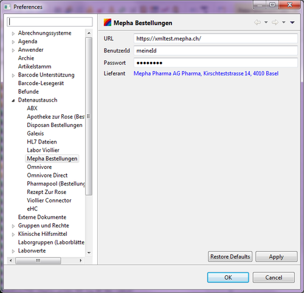

At.medevit.elexis.mepha.orders.feature.feature.group
| Version: | 3.0.0 |
| Kategorie: | Datenaustausch |
| Beschreibung: | Mepha Direktbestellung |
| Author: | Lucia Amann |
| Letzte Bearbeitung: | 31. August 2015 |
| Voraussetzungen: | Elexis 3.0, Internetverbidnung |
| Betriebssystem: | Windows, Mac, Linux |
| Lizenz: |
Contents
Einführung
Dieses Plugin ermöglicht die elektronische Übermittlung von Bestellungen an Mepha über deren standardisierte Schnittstelle.
Voraussetzungen
Sie benötigen lediglich ein Kundenkonto bei Mepha. Mepha Registrierung Der Zugang für die automatische Bestellung ist damit bereits vorhanden. WICHTIG: Es kann bei Mepha nur ENTWEDER über den Webshop oder elektronisch aus Elexis heraus bestellt werden.
Installation und Konfiguration
Medelexis-Benutzer können über das Abo-Management installieren oder deinstallieren. Abonnieren Sie dazu in der Kategorie Datenaustausch das Plugin Mepha Direktbestellungen. Nach dem Aktualisieren von Elexis ist das Modul geladen.
Konfiguration
Nach erfolgreicher Installation ist unter Datei > Einstellungen > Datenaustausch > Mepha Bestellungen dieses Einstellungsseite vorhanden.  Alle Felder auf dieser Einstellungsseite sollten definiert werden!
- URL Geben Sie die URL auf welche sich Elexis für die Übertragung der Bestellung verbinden soll an.
- BenutzerId und Passwort damit Sie bzw. Ihre Bestellung von Mepha identifiziert werden können.
- Lieferant um sicherzustellen, dass nur Artikel welche Mepha als Lieferanten hinterlegt haben von Mepha bestellt werden.
Textvorlage für Bestellantwort
Damit Sie Mepha Bestellantworten empfangen und darstellen können benötigen Sie eine Systemvorlage mit dem Namen MephaAntwort.
Um den vollen Funktionsumfang nutzen zu können sollte diese Vorlage folgende Platzhalter beinhalten:
| Platzhalter | Beschreibung |
|---|---|
| [MephaLieferdatum] | voraussichtliches Lieferdatum der Bestellung |
| [MephaRefNr] | Referenz-Nummer der Bestellung |
| [MephaErrors] | Potenzielle Fehler würden an Stelle dieses Platzhalters eingefügt werden. Wenn kein Fehler auftritt bleibt diese Stelle leer. |
| [Bestellung] | Die einzelnen Bestellpositionen mit Informationen |
Für ein Beispiel wie diese MephaAntwort Vorlage aussehen soll, können Sie direkt hier die OpenOffice Version herunterladen.
Anwendung
Das MephaBestell-Plugin koppelt sich in der Bestellungen-View an.
Erstellen und bearbeiten Sie Ihre Bestellung wie gewohnt und klicken Sie anschliessend auf das Icon zum Automatischen übermitteln von Bestellungen. Dadurch wird der Bestellvorgang, sofern Sie über eine funktionierende Internet-Verbingung verfügen, automatisch abgewickeln. Im Anschluss erhalten Sie entweder eine Fehlermeldung, oder eine tabellarische Bestellbestätigung, welche Sie bei Bedarf auch ausdrucken und ablegen können.